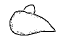
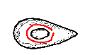
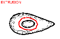
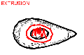
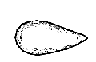
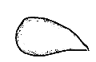
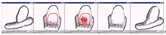

[1.Camera]
[2.Create]
[3.Paint]
[4.Extrude]
[5.Cut]
[6.Smooth]
[7.Bend]
[8.File]
Step 6: Smoothing
1
2
3
4
5
6
1) Create an object with an extrusion. Using the smoothing operation, you can remove unnecessary bumps or creases.
2) Rotate the model, and draw a closed stroke around the area you want to smooth.
3) The system will be in "extrusion" mode.
4) Draw a scribbling stroke.
5) The system removes the original surface entirely,
and constructs a new, smooth surface.
6) Rotate the model to see the result.

This operation is useful to smoothly merge extruded surfaces.
(Scribbling stroke should be very condensed.)
When you have practiced enough, go to
step 7.
If the program works strangely, close the applet window and
restart the applet.
Copyright (C) 1998
Takeo Igarashi